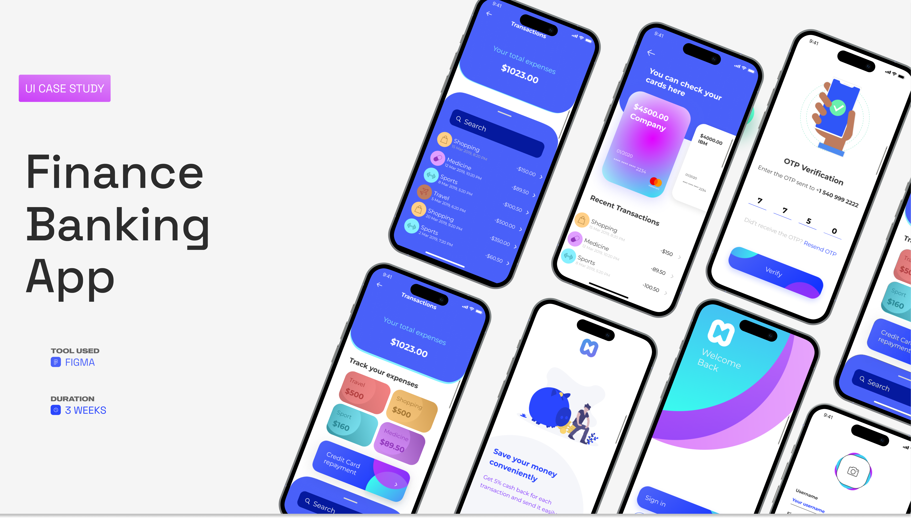
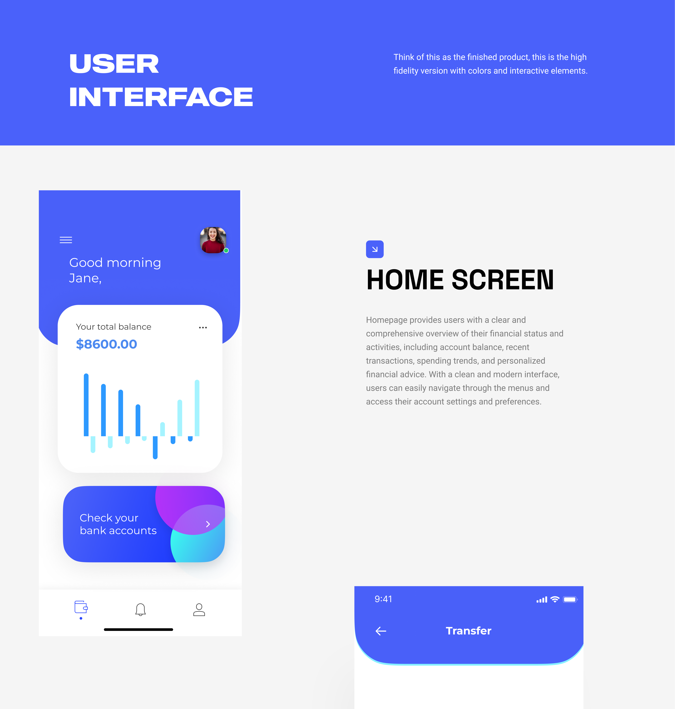
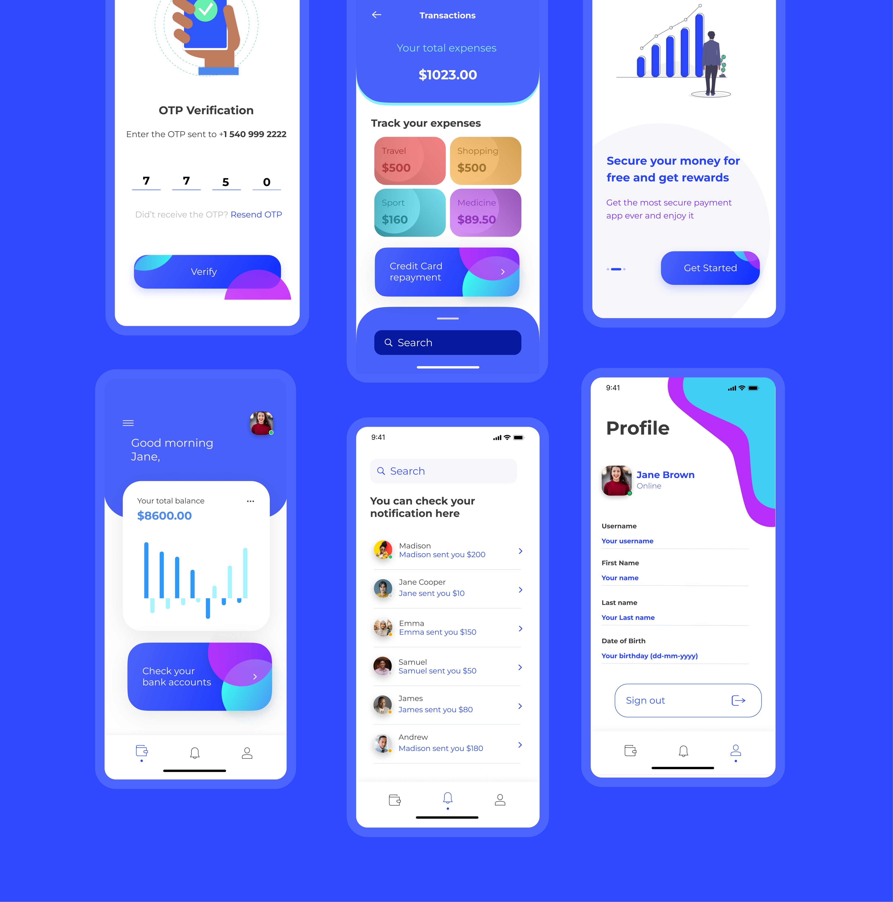
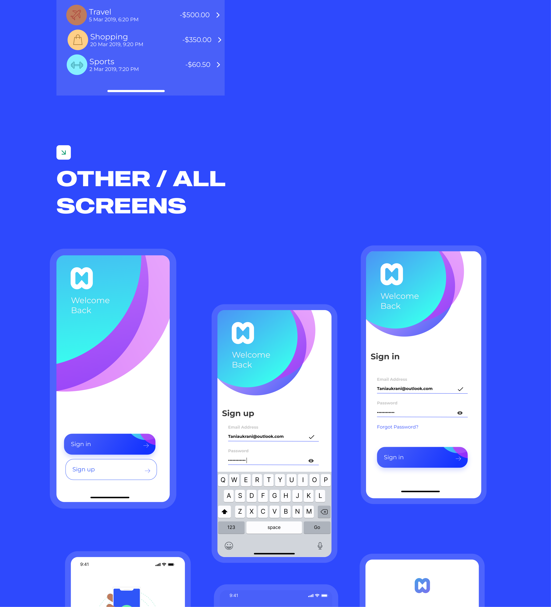
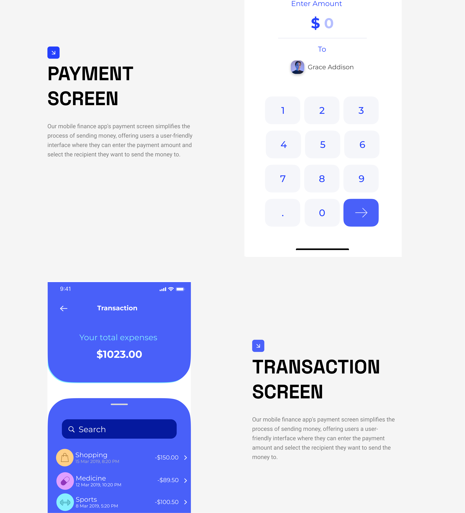
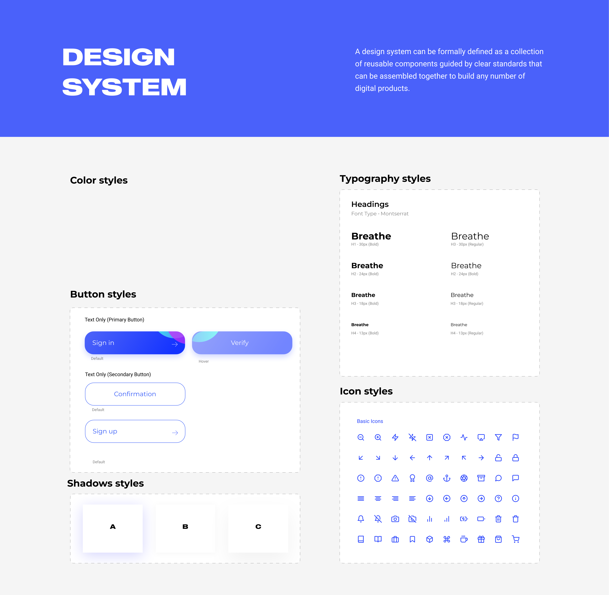

A modern mobile banking app - designed end-to-end in three weeks. Account tracking, payments, transfers, and a small system to hold it all together.

HeroA quick visual index of the app - auth, transactions, cards, expense tracking, profile.
This is a self-initiated UI case study exploring what a modern mobile banking app looks like when it leans hard on clarity - clear hierarchy, generous space, and one job per screen.
The project covers the full first-time experience: onboarding, OTP verification, sign in / sign up, the home dashboard, expense tracking, transactions, cards, payments, notifications, and the profile. Plus a small design system to keep the surface consistent.
Mobile banking has a habit of competing with itself - tabs full of cross-sells, dashboards that lead with everything at once, and dense lists that mistake density for usefulness. The goal here was the opposite: make the most common actions - check balance, send money, see what I spent - the most obvious ones.
I split the time roughly in thirds - one week thinking about flows, one week pushing the visual language, one week tightening everything into a system.
01 - Flows
Listed every action a customer does in a week - pay, check, transfer, top-up. The home screen had to answer those in one glance, not three taps.
02 - Visual Direction
An electric-blue brand, off-white cards, gentle gradient accents on the key CTAs. Restraint elsewhere - most surfaces are quiet so the actions can be loud.
03 - System
Pulled out a small token set - colors, type scale, button states, shadow, icons - so the next screen takes minutes, not hours.
Make the most common actions the most obvious ones. Everything else is decoration.
The user interface is the high-fidelity version of the app - colors applied, gradient CTAs in place, and a clear hierarchy across every flow.

Home screenBalance, spend over time, and the next action - "Check your bank accounts" - all above the fold.
OTP verification, expense tracking, the cards view, secure-rewards, the dashboard greeting, notifications, and the profile - each laid out with the same visual rules so the app stays familiar as you move through it.

Six core screensRepetition is the system - same card shape, same blue accent, same gradient CTA. The screens stay distinct because the content changes, not the chrome.
The first screens a user ever sees set the tone for the rest of the product. I kept the gradient hero shape, anchored by the brand mark, and let the form below it stay restrained - large hit targets, a single primary action, no decorative noise.

Auth flowOne layout, three states. Bottom-right always has the primary CTA so muscle memory wins.
The payment screen simplifies the process of sending money: enter an amount, pick a recipient, send. The transaction screen reverses it - total expenses up top, a searchable feed below. Both lean on the same vocabulary so the back-and-forth feels seamless.

Payment & transactionBig numbers, generous tap targets, one decision per screen.
A design system, formally, is a collection of reusable components guided by clear standards that can be assembled to build any number of digital products. In practice for this project that meant: a tight color set, a four-step type scale (Montserrat, H1–H4), two button styles, three shadow elevations, and an icon set.

Design systemColor · type (Montserrat H1–H4) · two button styles · three shadow elevations · basic icon set.
From an empty Figma file to a full design system and 15+ key screens - onboarding, dashboard, payments, transactions, profile - designed and ready to hand to engineering.
The biggest lesson from this sprint: pulling tokens and components out while designing screens (rather than after) cut the rework in half. By the third week, new screens were composition exercises, not from-scratch design.
If you're hiring and want to dig into any of this - what worked, what I'd change next time - drop me a note. I'm always up for a critique.